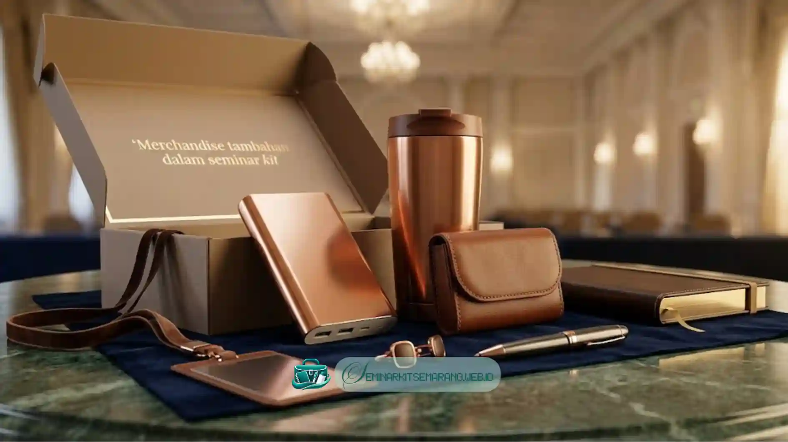

Apa Saja Komponen Wajib yang Harus Ada dalam Seminar Kit
Komponen wajib yang harus ada dalam seminar kit meliputi tas sebagai wadah utama,
notes untuk mencatat materi, pulpen sebagai alat tulis, dan map untuk
menyimpan dokumen acara.
Tas berfungsi sebagai wadah utama yang menyatukan seluruh komponen seminar kit sekaligus
menjadi media branding acara melalui cetak logo. Notes atau buku catatan membantu peserta
mendokumentasikan poin penting dari materi yang disampaikan narasumber.
Pulpen menjadi pelengkap notes yang wajib disediakan agar peserta dapat langsung
mencatat tanpa perlu membawa alat tulis sendiri.
Map dokumen berfungsi menyimpan susunan acara, materi presentasi, atau sertifikat yang
dibagikan kepada peserta selama maupun setelah acara berlangsung.
Keempat komponen ini menjadi standar minimum yang hampir selalu ada dalam setiap
paket seminar kit, terlepas dari skala maupun jenis acara yang diselenggarakan.
Apa Perbedaan Komponen Esensial dan Opsional
Perbedaan komponen esensial dan opsional terletak pada tingkat kebutuhan fungsional peserta,
di mana komponen esensial bersifat wajib sementara komponen opsional bersifat tambahan
sesuai anggaran dan jenis acara.
Komponen esensial adalah perlengkapan yang secara langsung menunjang aktivitas peserta selama
acara, seperti tas, notes, pulpen, dan map dokumen. Tanpa komponen ini, peserta akan kesulitan
mengikuti dan mendokumentasikan jalannya acara.

Komponen opsional adalah tambahan yang bersifat pelengkap dan dapat disesuaikan dengan
anggaran serta tema acara. Contoh komponen opsional meliputi lanyard atau ID card,
flashdisk berisi materi digital, tumbler, gantungan kunci, atau merchandise bertema lainnya.
Penentuan komponen opsional sebaiknya mempertimbangkan relevansi dengan jenis acara.
Misalnya, flashdisk lebih relevan untuk seminar berbasis teknologi, sementara tumbler
lebih relevan untuk acara yang berlangsung seharian penuh di lokasi indoor.
Bagaimana Menyesuaikan Isi Seminar Kit dengan Jenis Acara
Cara menyesuaikan isi seminar kit dengan jenis acara adalah dengan mempertimbangkan durasi acara,
jumlah sesi, dan kebutuhan spesifik peserta sesuai tema seminar atau pelatihan yang diselenggarakan.
Beberapa contoh penyesuaian isi seminar kit berdasarkan jenis acara:
- Seminar satu hari umumnya cukup dengan komponen esensial tanpa merchandise tambahan
- Pelatihan multi hari dapat ditambahkan tumbler atau botol minum untuk kenyamanan peserta
- Seminar berbasis teknologi dapat menyertakan flashdisk berisi materi digital
- Acara formal instansi pemerintah umumnya menambahkan lanyard dan ID card resmi
- Acara dengan sponsor dapat menambahkan merchandise bertema sponsor sebagai bagian promosi
Penyesuaian ini membantu memastikan seminar kit tetap relevan dengan kebutuhan peserta tanpa
menambah pengeluaran untuk komponen yang tidak diperlukan.
Isi seminar kit yang ideal terdiri dari kombinasi komponen esensial dan opsional yang
disesuaikan dengan jenis, durasi, dan skala acara.
Panitia acara di Semarang disarankan menentukan prioritas komponen berdasarkan kebutuhan peserta
agar seminar kit tetap fungsional dan efisien dari sisi anggaran.